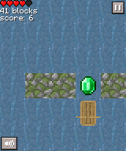
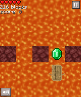
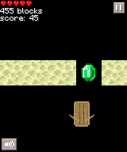
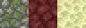
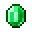
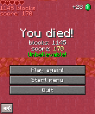

向左移动：左键、A
向右移动：右键、D
暂停：Esc
全屏：F11
截图：F2（截图文件将会保存在%AppData%\AllTheWayForward\screenshots中）
水与苔石（主世界）：0~200格与848~∞格
岩浆与地狱岩（下界）：200~400格与648~848格
末地石（末路之地）：200~400格与400~648格
障碍物  （碰撞后减少1~1.5格血）
（在300格以后，每行障碍物有1/3的概率移动）
绿宝石  （得分+1）
蜘蛛网 （速度减少到大约10%）
商店以绿宝石为货币
每局游戏结束后获得绿宝石个数可以在右上角看到，如下图
增加的绿宝石个数=四舍五入(得分/10+距离/100)
